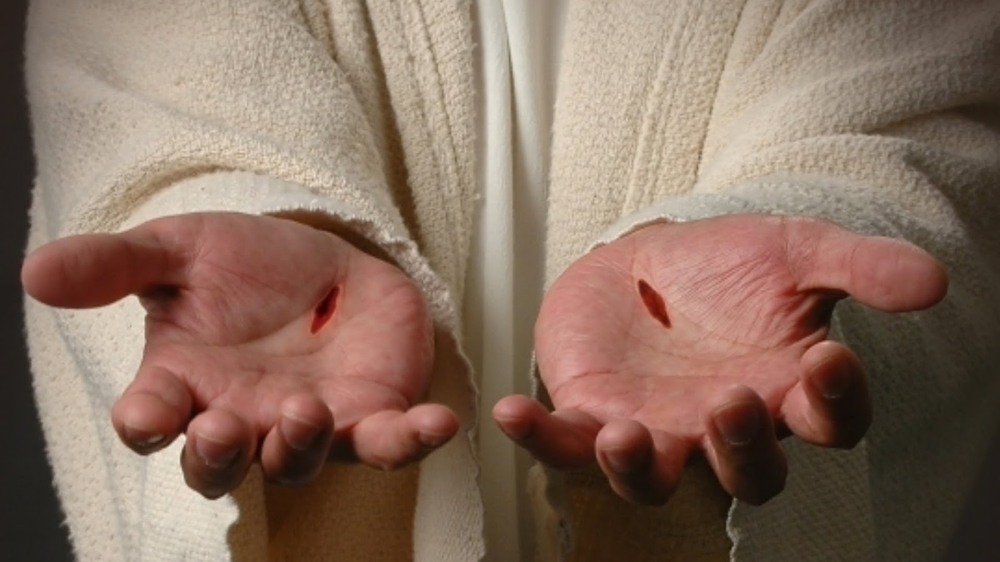
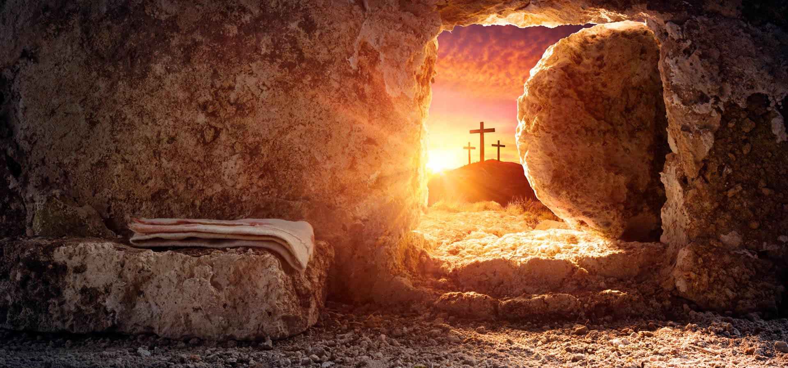
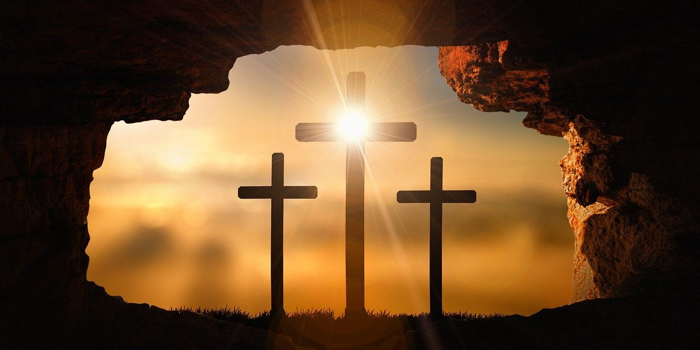
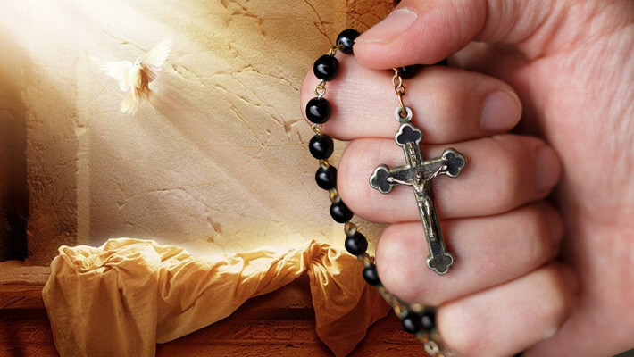

Sobre Nós
Horários Orações
Cura de Geração
  
A cura de gerações só depende de você
A cruz foi a maior prova de amor que Jesus teve por nós, se você chegou até aqui é porque você sente o chamado do amor e glória divina
Acompanhe ao vivo Orações
Assistir Agora
Escreva aqui seus pedidos de orações
Ao vivo pelo WhatsApp

Terço da Divina Misericórdia
Terço das Santas Chagas
Terço da Virgem Poderosa
Terco das Lagrimas de Sangue de Maria